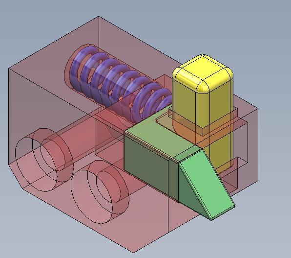
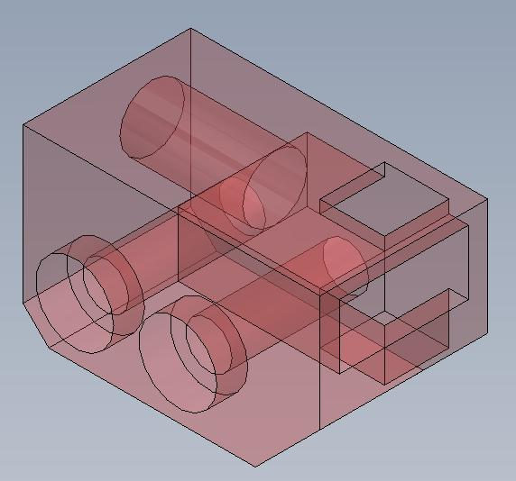
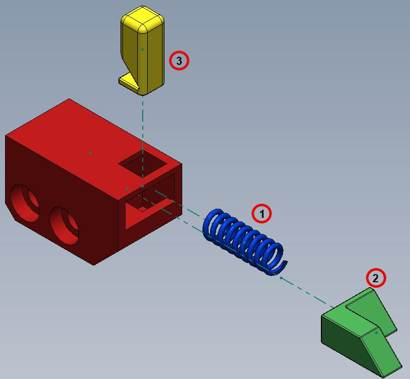
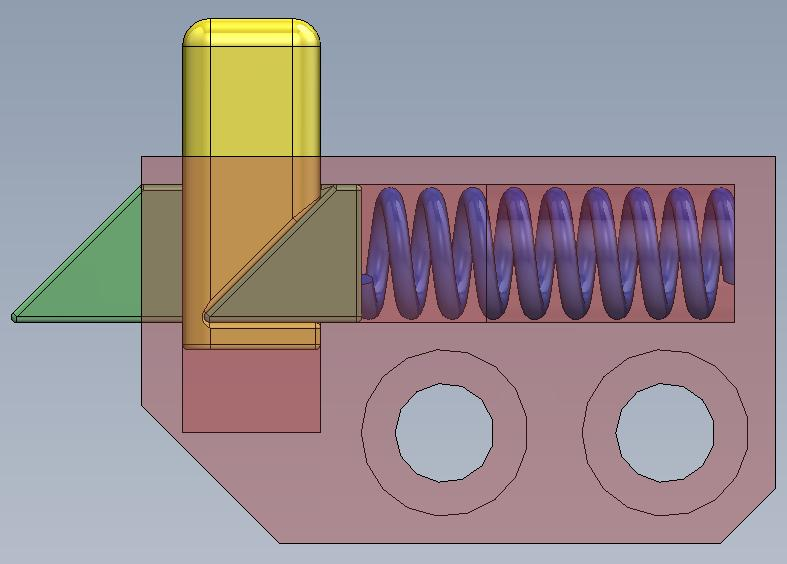
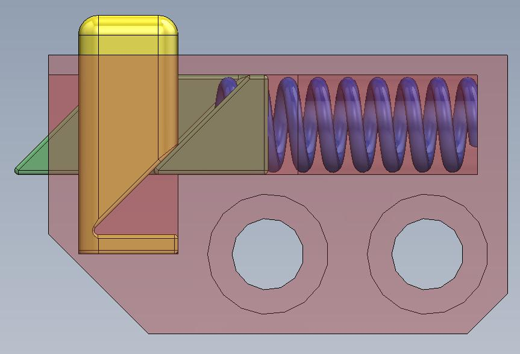
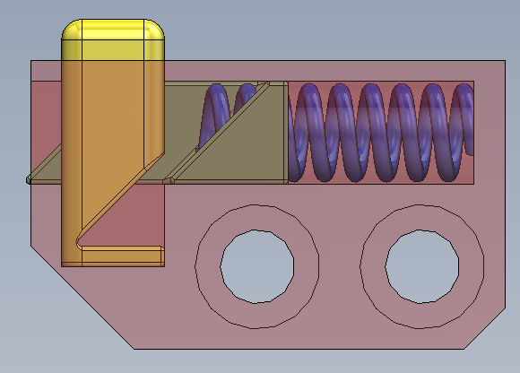
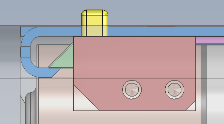
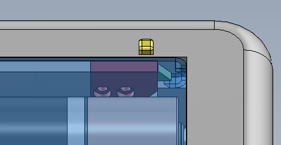

Design Brief
The objective was to design a spring-loaded battery door mechanism for the rear panel of a compact stainless steel consumer electronics enclosure (61.8 × 103.5 mm). The mechanism had to securely retain two AA batteries while providing a single-action release: a downward button press converts into an upward door pop. Additional constraints included auto-latching (the door closes and re-engages without user intervention), zero rattle in both open and closed states, a closed-door surface flush within 0.1 mm of the housing, and a button protrusion no greater than 2.5 mm at rest.
Concept Development
Nine mechanism families were evaluated during ideation — push-push cam latches, seesaw and bell-crank linkages, sliding wedge latches, bistable springs, swing roller catches, snap latches, rotating arm mechanisms, leaf springs, and magnetic holds. Benchmark research drew from real-world implementations in cabinet hardware, automotive compartments, and gate latches. Two concepts advanced to detailed design based on their compatibility with the force-direction conversion requirement: a dual wedge slider and a swing arm latch.
Selected Mechanism: Wedge Slider
The wedge slider was selected over the swing arm latch through a weighted decision matrix scoring it 8.2 / 10 against 7.5 for the swing arm. Internal volume efficiency carried the highest weighting (25%) and proved decisive — the linear slider's compact footprint preserves significantly more space for the battery bay and electronics than the swing arm's rotational envelope. With seven total parts versus eight, the wedge slider also offered a simpler BOM at $1.45 per unit versus $1.62 at 100,000+ volume.
A 45° wedge interface on the button converts the user's vertical press into horizontal slider retraction at a 1:1 displacement ratio. The Delrin slider engages a bent latch lip on the door edge. A compression spring (SS 304, k = 0.50 N/mm, 8 mm free length) returns the slider to the latched position when the button is released. The chamfered edge on the door's latch lip acts as a cam surface during closing — pushing the slider against its spring until the lip clears, at which point the slider snaps back to auto-latch.
Wedge force analysis for a 5 N button input with μ = 0.20 friction yields a normal force of 5.89 N and a net horizontal slider force of 2.94 N after channel friction. With a compression spring preload of 1.50 N at the latched position, the system retains a 0.85 N force margin — sufficient to guarantee reliable unlatching across manufacturing tolerances and wear conditions.
Stress Validation
All critical load paths were validated analytically with substantial margin. The button-to-wedge contact in Delrin sees just 1.30 MPa against 65 MPa yield (FoS = 50). The door latch lip bending stress in AL 5052 H32 reaches 17.78 MPa versus 195 MPa yield (FoS = 11.0). The latch pin press-fit in alloy steel reaches approximately 35 MPa against 250 MPa yield (FoS ≈ 7). The substantial safety factors across all components leave headroom for further geometry optimization or material substitution in future iterations.
Subsystem Refactor
Following initial design selection, two key modifications were introduced to improve manufacturability and reliability. First, the latch components were repackaged into a self-contained, externally-assembled modular latch subsystem built around a new machined part — the latch anchor block. Second, a button retention lip was added to positively retain the button when the housing is inverted. These two changes transform the mechanism from a set of loose parts assembled directly into the housing into a single drop-in module.

Latch Anchor Block
The anchor block is machined from solid aluminum and serves as the housing for every other latch component. After the subsystem is assembled externally, the block mounts into the main housing using the same M1.6 fasteners already specified in the parent assembly's BOM — adding zero new fastener SKUs. Internal features include a slider channel, a button travel channel, and a cylindrical bore for the compression spring.
Manufacturability
The anchor block geometry was deliberately constrained so all internal features reference one of three orthogonal datum faces. This allows fabrication on a standard 3-axis CNC mill with simple workholding reorientations between operations — no 4-axis or 5-axis tooling required. The result is significantly reduced setup time, lower tooling cost, and shorter cycle time per part compared to embedding the same features directly into the larger stainless steel housing.

Assembly Procedure
The subsystem is built in three sequential steps. (1) The compression spring is inserted into the cylindrical bore on the side of the anchor block. (2) The slider follows from the same direction; once the spring is fully compressed, sufficient clearance opens for the next part. (3) The button drops in from the top into its channel. When the slider is released, the spring drives it forward and the slider's wedge face contacts the button's wedge face — lifting the button to its rest position. The newly-added retention lip on the button engages the underside of the slider, preventing the button from falling out when the housing is inverted.

Slider States
The slider operates between three distinct positions, each defined by a hard mechanical stop in the channel geometry. No external limit switches, sensors, or end-of-travel hardware is required — the channel walls themselves act as the physical stops, with different flat faces on the slider contacting different ends of the channel at each position.



1. Installation
The slider is pushed fully into the channel against the spring until it reaches the channel end. This position clears enough vertical space in the button channel for the button to be inserted from the top during assembly. The slider's flat back face contacts the back wall of the channel as the hard stop.
2. Button at Rest
With the button installed and the slider released, the spring drives the slider forward until its wedge face contacts the button's wedge face. The button rises until its retention lip contacts the underside of the slider — this lip-on-slider contact is the physical stop that defines the rest position and sets the button's rest protrusion at approximately 1 mm above the housing surface.
3. Button Pressed
Under normal user actuation, the button can be pressed downward and both wedge faces remain in continuous sliding contact. The button travels downward until the bottom face of its lip contacts the bottom of the channel — the channel depth defines this stop. At full press the button sits flush with the housing surface and the slider has retracted enough to release the door latch.
Final Assembly Integration
Integrating the latch subsystem into the housing dramatically simplifies the housing's machining requirements. Rather than requiring a complex internal channel, slider pocket, and spring bore to be machined into the stainless steel housing itself, the housing now requires only one rectangular pocket sized to receive the anchor block, plus two small through-holes for the M1.6 mounting screws.


The modular subsystem approach decouples mechanism complexity from housing manufacture: the anchor block holds all complex geometry on a small, easily-machined aluminum part, while the housing requires only a simple rectangular pocket. This split improves yield, lowers cost, and allows the latch to be quality-checked as an isolated subassembly before final integration.
Project Files
The full CAD model of the latch subsystem is available for download as a Parasolid file — the neutral CAD interchange format compatible with SOLIDWORKS, Creo, NX, Inventor, Fusion 360, and most other major CAD packages.
Recommendations & Next Steps
The design is positioned for production engineering: full tolerance stack-up analysis of all mating features, FEA-driven geometry optimization to minimize actuation force, sourcing of off-the-shelf compression and torsion springs from catalog suppliers, development of detailed manufacturing drawings with full GD&T callouts, draft angle additions to all injection-molded components, and aesthetic cover design to conceal the visible mechanism elements on the housing exterior.